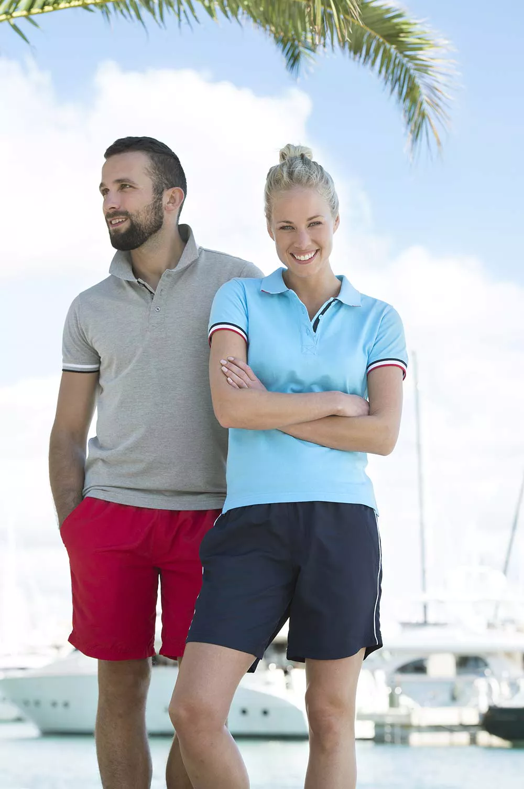
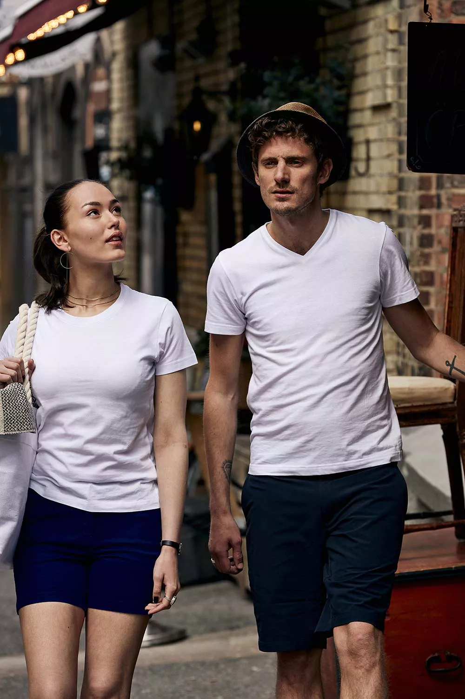
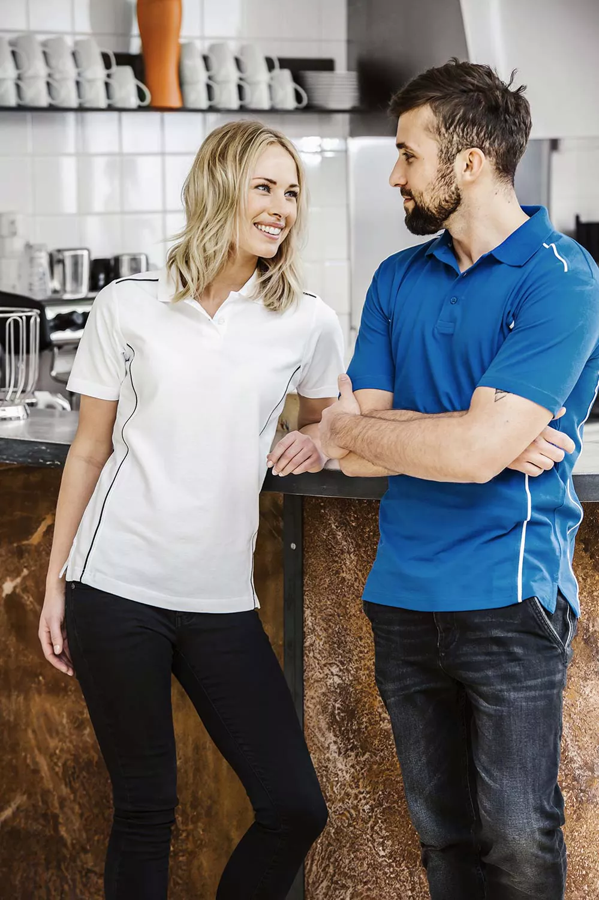
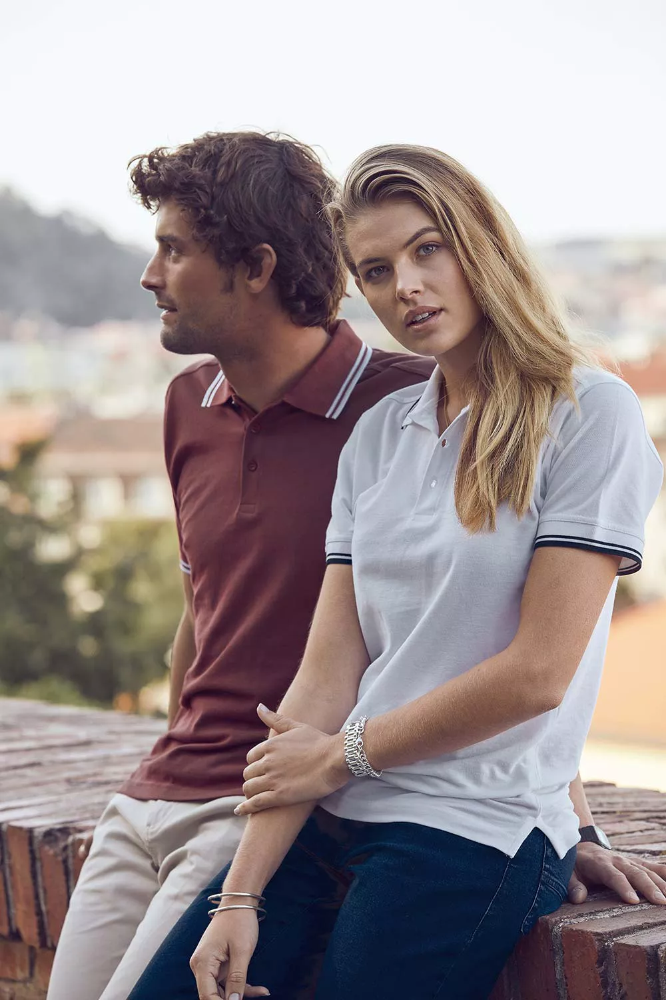

Om du vill att ditt företag ska bli framgångsrikt vet du att det
är viktigt att göra ett positivt första intryck. Vad kan därför
vara en mer effektiv metod än att förse dina anställda med
profilkläder som är både moderiktiga och sofistikerade?
Med hjälp av den information som presenteras här om tryckta
t-shirts kommer du att kunna välja de tryckta t-shirts och andra
typer av kläder som är idealiska för ditt företag. Detta kommer
att bidra till att främja ditt varumärke förutom att få ditt team
att se fantastiskt ut, vilket är en win-win-situation.
Varför det kan vara fördelaktigt för ditt företag att låta trycka
T-shirts
T-shirts med ditt företags logotyp tryckt på dem är ett
fantastiskt sätt att öka medvetenheten om ditt företag av flera
anledningar. Till att börja med är de ett utmärkt medium för att
marknadsföra ditt varumärke. T-shirts kan tryckas med ditt
företags logotyp eller slogan, och sedan kan tröjorna delas ut
till samarbetspartners, kunder och anställda. Detta bidrar till
att öka kännedomen om ditt varumärke och göra det mer
igenkännligt för potentiella kunder.
T-shirts med ditt företags logotyp tryckt på dem är ännu ett
fantastiskt alternativ för detta. På t-shirtarna kan du trycka
bilder och slogans som återspeglar ditt företags värderingar och
kultur, vilket bidrar till att skapa en känsla av samhörighet
bland de anställda. Detta kan bidra till att förbättra moralen
bland de anställda och göra ditt företag mer tilltalande för
personer som kan vara intresserade av att söka jobb där.
T-shirts med logotyper tryckta på dem är ett utmärkt sätt att
stärka relationerna med affärspartners och kunder. Om du vill ge
bort T-shirtsen som gratis gåvor vid evenemang eller mässor kan
du trycka humoristiska eller intressanta bilder eller slogans på
T-shirtsen. Folk kommer att uppmuntras att göra affärer med dig
och ditt företag på grund av detta eftersom det bidrar till att
skapa en positiv association med ditt varumärke.
Hur du kan skilja dig från mängden genom att trycka din egen
skräddarsydda T-shirt
För att skapa en stark företagsprofil måste du sticka ut från
konkurrenterna. Och vilket bättre sätt att göra det än att
investera i tryckta T-shirts?
Tack vare den ständigt ökande populariteten för anpassade tryck
kan du nu få din företagslogotyp, slogan eller kontaktuppgifter
tryckta på T-shirts som din personal kan bära med stolthet.
Detta gör inte bara ditt team lättare att identifiera för
kunderna, utan bidrar också till att marknadsföra ditt varumärke
och få in nya kunder. Tveka inte att göra en investering i
tryckta T-shirts om du letar efter ett effektivt sätt att öka
medvetenheten om ditt företag utan att det kostar mycket pengar.
Du kommer inte att ångra dig!


Vilken typ av företag kan dra nytta av tryckta T-shirts?
T-shirts som är tryckta med ett företags logotyp kan vara till
nytta för i stort sett alla typer av företag. Tryckta T-shirts
kan hjälpa företag av alla storlekar att projicera en mer
professionell image och skapa en närmare kontakt med sina kunder
och anställda. Detta gäller både för små företag och stora
koncerner.
Nedan följer en lista över några av de vanligaste förklaringarna
till varför företag väljer att beställa tryckta T-shirts:
- För att uppmärksamma ett visst tillfälle eller en
särskild kampanj.
- För att visa stöd för ett lag eller en
välgörenhetsorganisation.
- För att öka människors kännedom om ett varumärke
- För att erkänna och berömma personalens insatser.
Hur du bestämmer det bästa företaget för tryckning av t-shirts för
dina behov
Det är dags att välja ett tryckeri nu när du har en gedigen
förståelse för de olika typerna av t-shirts och tryckprocesser
som finns tillgängliga för dig. Eftersom alla tryckerier inte är
lika bra är det viktigt att göra efterforskningar för att hitta
ett tryckeri som kan producera utskrifter av hög kvalitet som
håller länge.
När du väljer tryckeri finns här några faktorer att ta hänsyn
till:
- Kan du sätta dig in i de material som tryckeriet
använder? Vissa skrivare använder billigare material som är mer
benägna att blekna eller spricka efter att ha tvättats några
gånger.
- Vilken typ av utskriftsteknik använder tryckeriet sig
av? Vissa tryckerier fortsätter att använda föråldrade
processer, vilket kan resultera i utskrifter av dålig kvalitet.
- Hur snabbt utför tryckeriet de beställningar som görs?
Du vill definitivt inte behöva vänta några veckor på att få
trycka dina T-shirts.
- Hur vänlig och hjälpsam är personalen på tryckeriet? Du
vill enkelt kunna komma i kontakt med någon som kan hjälpa dig
om det skulle uppstå problem med den beställning du gjort
Det bästa sättet att maximera potentialen hos ditt T-shirt
tryckningsprojekt
När det gäller att få ut mesta möjliga nytta av tryckta T-shirts
finns det några saker att tänka på för att maximera deras
potential. Till att börja med måste du se till att den T-shirt
du väljer att trycka på är av tillräckligt hög kvalitet. När den
bärs ska den inte klumpa ihop sig eller hänga, så tyget ska vara
bekvämt och andningsbart, och snittet ska vara korrekt så att
artikeln passar bra.
Tänk på layouten för den design som du tänker trycka nästa gång.
Håll dig till en enfärgad T-shirt i en neutral färg om du vill
uppnå en look som är okomplicerad och diskret. Välj en design
som är livlig och full av färger om du vill ha något som fångar
folks uppmärksamhet.
Sist men inte minst ska du se till att låta ett pålitligt
företag med erfarenhet på området trycka dina T-shirts så att de
blir perfekt. Eftersom användning av en felaktig tryckmetod kan
leda till att designen spricker eller bleknar med tiden är det
viktigt att investera i tryck av hög kvalitet som håller över
tid.

Förslag för att utveckla en lyckad design för en T-shirt
Det är dags att börja designa dina egna tryckta T-shirts nu när
du har en grundlig förståelse för allt som finns att veta om
dem, inklusive de otaliga sätt på vilka de kan hjälpa dig att
marknadsföra ditt företag. Följande råd kommer att hjälpa dig
att ta fram en iögonfallande design för en T-shirt:
Håll det enkelt. När det gäller utformningen av T-shirts är
mindre mer i många fall. Behåll en rak och lättläst design för
ditt företags logotyp eller budskap och försök att undvika att
fylla tröjan med en överdriven mängd grafik eller text.
Använd djärva färger.
Din T-shirt har större chans att sticka ut från mängden om den
använder en färgskala som är livlig och drar till sig ögat.
Tänk på vilka personer du försöker nå. Tänk på både den målgrupp
som du designar T-shirten för och det budskap du vill förmedla
innan du börjar. Med hjälp av detta kan du välja det perfekta
mönstret och de perfekta färgerna för din tröja.
Gör den unik.
Din T-shirtdesign måste vara unik och kreativ om du vill skilja
dig från andra produkter på marknaden. Var därför inte rädd för
att uttrycka din originalitet!
Några avslutande tankar om tryckta t-shirts
Tryckta T-shirts är ett utmärkt alternativ att ta i beaktande om
du letar efter ett sätt att ge ditt företag ett lyft. Det är en
utmärkt metod för att få ut ditt företags namn och logotyp, och
föremålen i fråga kan bäras av både anställda och kunder.
Du hittar ett stort urval av T-shirts som går att köpa,
inklusive både tryckta och enfärgade modeller. Vi erbjuder även
ett stort urval av andra typer av profilkläder, så att du kan
hitta de plagg som passar bäst för ditt företag.
Ta kontakt med oss genast för att få ytterligare information om
våra varor och tjänster, eller ta en titt på vår webbplats för
att bekanta dig med vad vi tillhandahåller.
